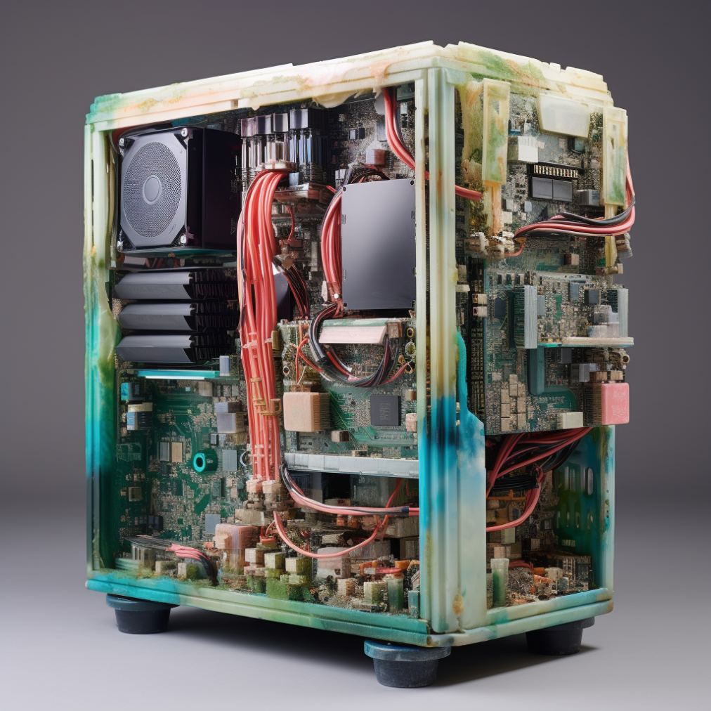
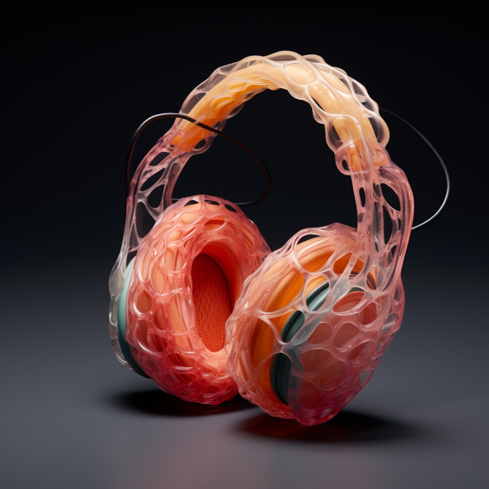

We are users of tech products, but as users we tend to follow the trends and get rid of old devices. What can we change to reduce uncontrolled wastage?
In a world increasingly driven by technology, the reduction of the computer elements wastage becomes a genuine mission of responsibility and care. Our innovative solution takes the form of a specialized shop—a haven where customers transform into architects of their own technological devices.
These are the chosen images of PC towers that customers can craft without the necessity of buying an entirely new computer, making them uniquely their own, diverging from the mass-market norm. It can be crafted from recycled materials. moreover, now, it's not just about performance; it's about sustainability and personal expression.
Imagine stepping into this unique "Tech build shop", a stocked with an array of spare parts from computers. Customers, now builders, embark on a deeply personalized journey to craft the perfect tech companion. Guided by knowledgeable specialists, this experience becomes a hands-on work, allowing individuals to select components tailored to their needs, whether building a new device from scratch or enhancing their existing one.

This interactive process goes beyond the mere act of purchase; it's an exploration, a creation of a digital companion uniquely attuned to personal preferences. The "Tech build shop" is not just a store; it's a community hub, a place where enthusiasts and novices alike converge to share insights, tips, and the joy of building.
As part of this journey, the "Tech build shop" becomes a classroom, hosting workshops and online tutorials. Customers are motivated to delve into the art of computer building, gaining a profound understanding of their devices' inner workings and how to maximize their efficiency.

While exploring sustainable product ideas, I came across the concept of creating headphones from used nylon fishing lines. Not only do they have a cool look, but they could also find a place in the world of electronic devices, perhaps within a "Tech build shop."